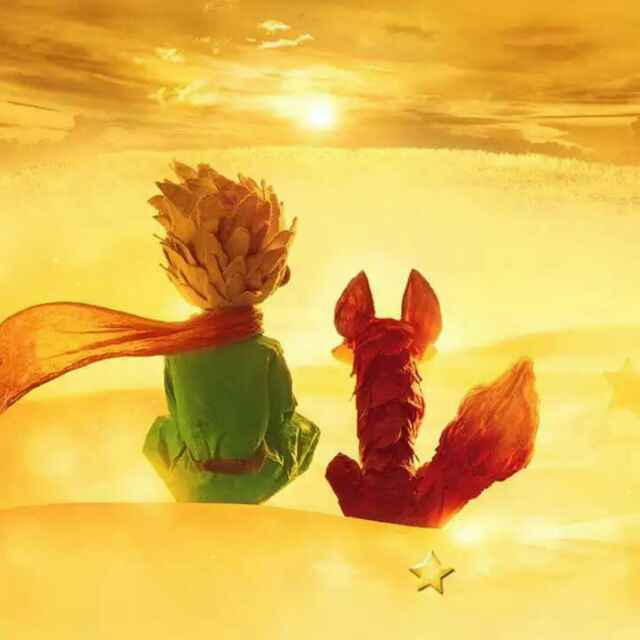
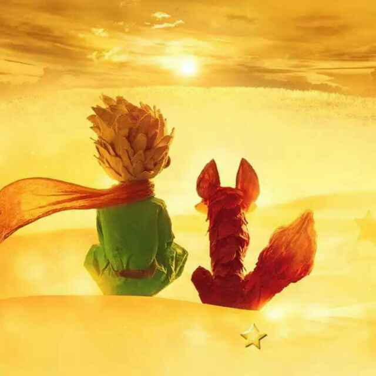

我行过许多地方的桥，看过许多次数的云，喝过许多种类的酒，却只爱过一个正当最好年龄的人

草在结它的种子
风在摇它的叶子
我们站着 不说话
就十分美好
说给自己听
如果有来生 要做一棵树 站成永恒 没有悲欢的姿势 一半在尘土里安详 一半在风里飞扬 一半洒落阴凉 一半沐浴阳光 非常沉默 非常骄傲 从不依靠 从不寻找
| 从不依靠 从不寻找 |
主页 | 日志 | 相册 | 留言 | 音乐 | 心情 | 联系 |
|
我行过许多地方的桥，看过许多次数的云，喝过许多种类的酒，却只爱过一个正当最好年龄的人  草在结它的种子 风在摇它的叶子 我们站着 不说话 就十分美好 |
说给自己听
|
| 2018.7.26 ©精灵的慢慢版权所有 |